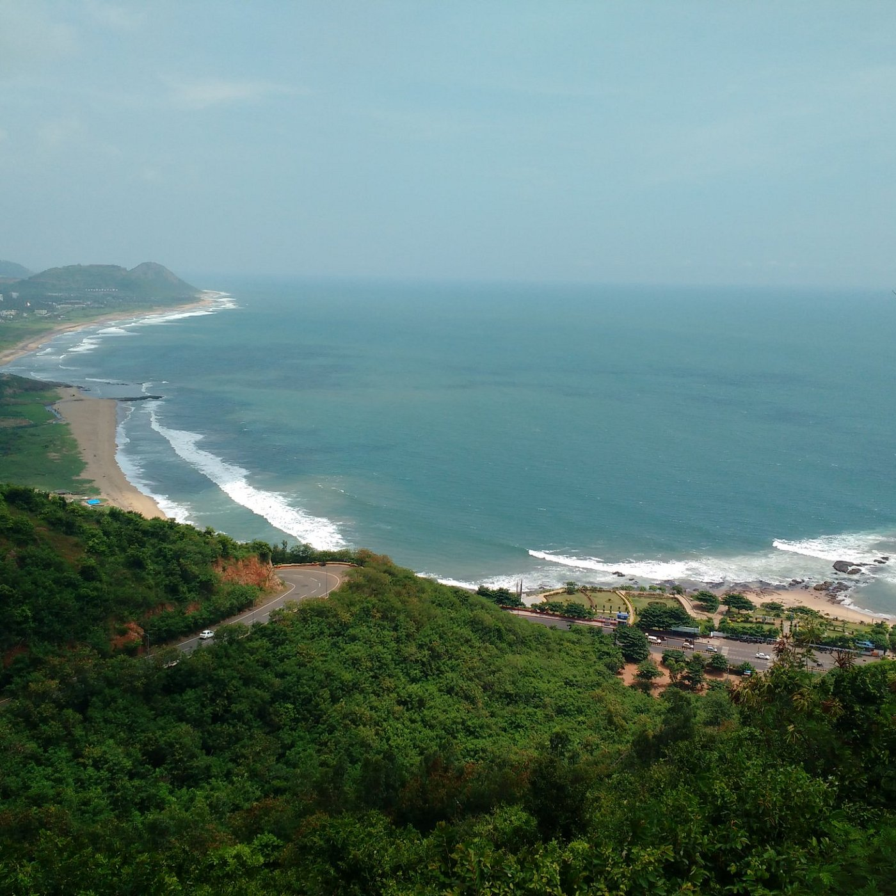

Visakhapatnam (/vɪˌsɑːkəˈpʌtnəm/; formerly known as Vizagapatam, also known as Vizag, Viśākha or Waltair)[1][16][17] is the largest and most populous metropolitan city in the Indian state of Andhra Pradesh. It is between the Eastern Ghats and the coast of the Bay of Bengal.] It is the second largest city on the east coast of India after Chennai, and the fourth largest in South India. It is one of the four smart cities of Andhra Pradesh selected under the Smart Cities Mission and is the headquarters of Visakhapatnam district. With an estimated output of $43.5 billion, it is the ninth largest contributor to India's gross domestic product as of 2016 
Prev . . Next